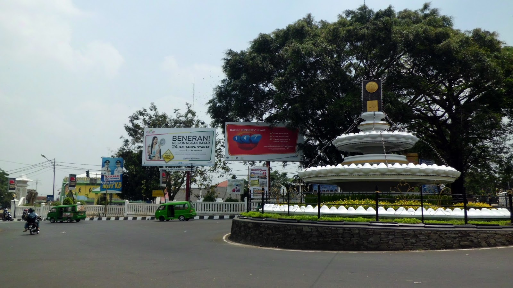

Curug
Tempat Wisata Lain

Profil Kota Sukabumi
Sukabumi adalah sebuah kota di Provinsi Jawa Barat, Indonesia. Kota Sukabumi secara geografis terletak antara 10645 50 - 10645 10 Bujur Timur dan 649 29 - 650 44 Lintang Selatan. Wilayah Kota Sukabumi sebelah utara berbatasan dengan Kabupaten Bogor, sebelah timur berbatasan dengan Kabupaten Cianjur, sebelah barat berbatasan dengan Kabupaten Lebak sedangkan sebelah selatan berbatasan dengan Samudra Hinda. Luas wilayah Kota Sukabumi 48,15 km2 dan terbagi menjadi tujuh kecamatan.
Peningkatan kualitas pendidikan menjadi pilihan Kota Sukabumi dalam upayakan peningkatan kualitas SDM. Keseriusan pemerintah kota dalam meningkatkan kualitas pendidikan ini dapat terlihat dalam realisasi anggaran yang memberikan anggaran bidang pendidikan sebesar 16 persen dari seluruh anggaran pembangunan daerah dan transportasi. Pemerintah Kota Sukabumi sedang berupaya menjadikan kota ini sebagai pusat jasa dimana di dalamnya juga dikembangkan perdagangan. Lapangan usaha perdagangan, hotel, dan restoran memberi sumbangan sebesar 45,7 persen dari total kegiatan ekonomi.
Karena Kota Sukabumi relatif dekat dengan Jakarta maupun Bandung, kota kecil yang berpenduduk 252.114 jiwa ini seringkali dijadikan kota alternatif peristirahatan wisatawan nusantara, apalagi daerah ini memiliki udara yang sejuk dengan suhu antara 19"C sampai 24"C. Sehingga tak jarang para pengunjung yang ingin beristirahat pada hari-hari libur, berkunjung ke kota ini sekedar untuk menikmati udara yang belum banyak terkena polusi udara. Terkadang, turis-turis asing yang ingin meneruskan perjalanan ke objek wisata uang ada di wilayah Kab. Sukabumi, seperti Palabuhanratu atau Selabintana, transit selama satu atau dua malam di Kota Sukabumi. Jadilah kemudian kota ini sebagai Kota Transit Pariwisata.
Upaya pemerintah kota dalam memberdayakan ekonomi kerakyatan pun sudah dimulai dengan membuka akses daerah terisolasi di wilayah sebelah selatan. Pembukaan jalur diprioritaskan di daerah-daerah yang berasal dari Kabupaten Sukabumi, yaitu Kecamatan Baros, Citamiang, dan Lembar Situ. Pembangunan infrastruktur yang dibiayai dari APBD Kota Sukabumi ini merupakan program sinergi dari masyarakat dan pemerintah kota. Masyarakat merelakan tanahnya untuk pelebaran jalan, sementara pemerintah kota menyediakan dana dan peralatan.
Secara tidak langsung pembuatan akses jalan turut mempengaruhi perkembangan ekonomi daerah, seperti penggemukan sapi dan domba serta pengembangan tanaman hortikultura yang dibina koperasi dan Dinas Pertanian. Tidak ketinggalan pula, industri rumah tangga berupa mebel yang sudah diusahakan bertahun-tahun oleh masyarakat makin berkembang.
|